Founder
SkillSim
Reverse Job Simulation Platform
A platform designed to bridge the gap between learning and real work, giving students earn through hands-on, realistic micro-challenges that mirror actual industry workflows.



Here are some of my recent projects that combine development and design.
Reverse Job Simulation Platform
A platform designed to bridge the gap between learning and real work, giving students earn through hands-on, realistic micro-challenges that mirror actual industry workflows.
Billing System & Analytic dashboard
OmniFlow is a customizable desktop application built with Python and MySQL that automates everyday business tasks like order management, customer tracking, and invoice generation.
Redesigning a decade-old school.
A complete redesign of my school’s decade-old website, focusing on usability, accessibility, and modern UI. The final design was officially adopted and deployed by the institution.
Storyline • Direction • Editing • VFX
A cinematic curtain-raiser video created for the school’s Annual Day event. I wrote the entire storyline, directed the shoot, and crafted the final film. The project features dynamic editing in Adobe Premiere Pro, custom VFX shots built in After Effects.
Motion Graphics • UI Design • Story
A contribution to the India Innovation Challenge 2024, where our project focused on the UN theme SDG-4: Quality Education. I worked on multiple key areas including creating motion graphics sequences, designing the project logo, and building clean UI screens.
Blender • Cinematics • Live-Action Editing
A visually striking cultural program intro created using a blend of 3D animation in Blender and real-life event footage. I designed and animated the full 3D sequence myself, integrating motion, lighting, and camera movement to create a cinematic atmosphere.
A glimpse of my creative work: UI design, posters, and branding experiments.
GET IN TOUCH
Reverse Job Simulation Platform
Most students learn concepts in isolation but rarely get the chance to apply them in realistic, work-like situations. This gap makes it difficult for students to understand how academic knowledge translates into practical skills and decision-making.
The platform had to be beginner-friendly, low-friction, and accessible to high school students with varying technical backgrounds. It was built with limited resources, a simple tech stack, and a strong focus on usability over complexity.
Instead of replicating full internships, I designed short, focused micro-task simulations that mirror real workplace challenges. This allowed users to learn through action while keeping the experience lightweight and approachable.
To improve onboarding and accessibility, some real-world complexity was intentionally reduced. This meant prioritizing clarity and learning flow over complete realism, especially for first-time users.
The result is a working prototype that enables students to engage with realistic tasks, reflect on their decisions, and learn through iteration. The platform demonstrates a clear learning loop and validates the effectiveness of simulation-based skill development.

Billing System & Analytics Dashboard

Local MySQL Database (Orders, Customers, Transactions)
This diagram illustrates the core modules, user roles, and functional scope of the OmniFlow desktop application.
Small businesses often rely on fragmented tools or manual methods for billing and record-keeping, leading to inefficiencies, errors, and poor visibility into their operations.
The system needed to function fully offline, respond quickly on low-end machines, and remain intuitive for non-technical users. The design also had to balance usability with reliable data handling.
I chose a desktop-first architecture using Python and CustomTkinter, backed by a local MySQL database. This allowed tighter control over performance, data consistency, and offline reliability compared to a web-based solution.
While the desktop approach limited horizontal scalability and remote access, it significantly improved responsiveness, reduced system complexity, and better suited the needs of small-scale users.
The final system provides stable billing, structured data storage, and basic analytics through a clean interface. It has been used to simulate real business workflows, validating both the design and technical approach.

Modernizing a Decade-Old Institutional Website
The existing school website was outdated, cluttered, and difficult to navigate. Important information such as announcements, academic details, and contact resources was hard to find, leading to confusion for students, parents, and staff.
The redesign had to work within an existing institutional structure, limited content ownership, and varied user needs. It also needed to be accessible to users with different levels of digital familiarity and remain easy to maintain by non-technical administrators.
I focused on restructuring the information architecture and simplifying navigation before applying visual changes. A clean, modern interface with clear hierarchy was chosen to improve readability and usability across devices.
Advanced interactivity and custom features were intentionally limited to ensure reliability and ease of maintenance. This allowed the website to remain lightweight and practical for long-term institutional use.
The redesigned website improved clarity, accessibility, and overall user experience. It was officially adopted and deployed by the school, validating the design decisions in a real-world environment.